Quick Start Manual
What is Livera
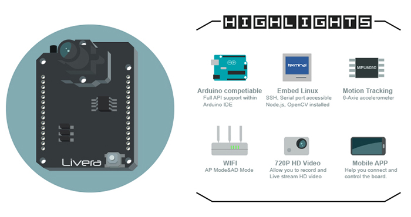
Welcome to start the new adventure with Hicat!! Happy hacks. :p
In a nutshell, Livera by Team HiCat is an open source hardware project which aims to bring machine vision features to the Arduino community. It is also a good platform for building visual driven robotics.
We've provided libraries which contain machine vision related APIs such as:
- 720hd video and photo capturing&processing
- OpenCV enabled Color-Sensitive and Object-Tracking.
- Wifi enabled wireless control (this can work with the iot!)
- Image capturing and data recording onto the onboard sd card
- Mobile observation and manipulation from our custom apps( web-based and native)
- Programmable and open source.
what Livera could do:

Future development:
It is always exciting to think about the future, as for the buzz of AI recently, undeniably it is the future.
When we saw the article of How a Japanese cucumber farmer is using deep learning to sort cucumbers. we think Livera should be best machine vision front-end part for image capturing and openCV pre-processing.
With the natural language virtual assistant and cloud deep learning platfrom, we could just teach the robot how to perform task by speaking, or let him learn by watching, that will be really awesome, like people could finally owns their own real world R2D2 or BB8.
In conclusion:
- Theme based advance
robotic kit. - More advance image capturing and processing capability
- Natural language virtual assitant
- Image streaming and processing
cloud
User Manual
Power:
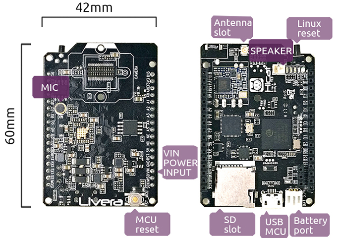
LIVERA allows mulitpul ways of power supply
- 3.7V lipo battery (No higher voltage)
- USB Port (MCU)
- I/O port(VIN)
Hock Up Camera Module:
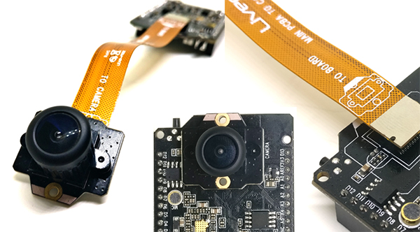
The Livera core package contains 3 main conponent, 1. Livera Board 2. Camera Module 3. Extendable Cable.
There are white symbols on top of every module, always remember to match the symbol while plugs the Camera module.
You could choose to directly plug in the Camera Module on to Livera Board, or use extendable cable to extend the Camera Module in order to build something like pan-tilt enabled Robot.
Connect to Livera(access point):
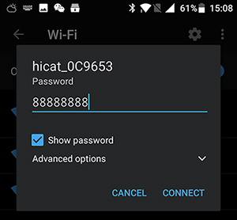
Power up Livera, give a few second to boot, the WIFI access point hostname hicat_xxxxxx should show up on your PC/MOBILE's wifi list. The default wifi password is: 88888888
Once you connected to the wifi, you could try out the host API web page by IP address: 192.168.1.1
You could let Livera access to your local wifi(station mode) by the API web 192.168.1.1 or web app 192.168.1.1/mmc/webapp/index.html(the address/www/mmc/ is the directory of mounted sd card address within Livera Linux, which also means you could build your own web application and copy it to the sd card, Livera will automaticly host it for you)
You could also change Livera's wifi name through linux command line tool: Once you connected to LIVERA, you could Telnet into the Linux system within Livera, follow the section Access into Linux(3518E) below, within the /hicat/ folder you should find the launch.sh tool, run the program ./launch.sh ap SSID password, or through web app.
Station WIFI Mode:
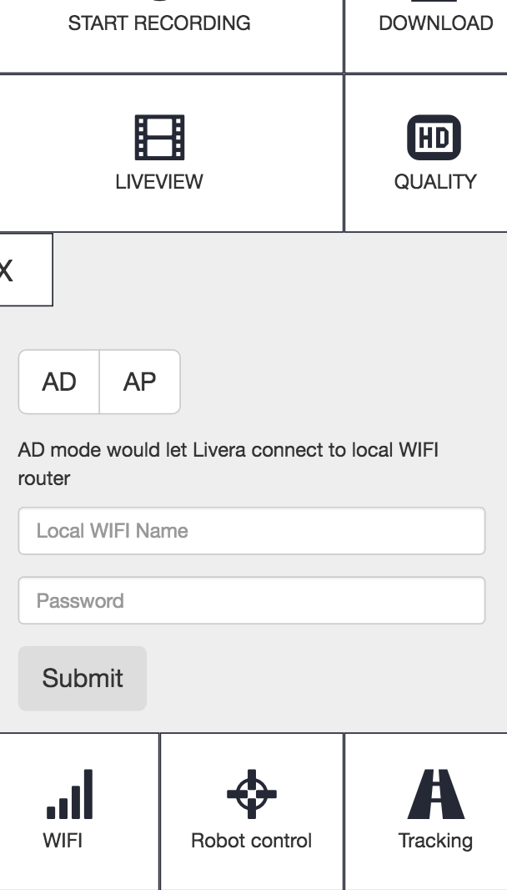
you could let Livera connected to your local wifi hotspot through the web API, btw we have provide a program call 'imhere' to let your got the new IP address of Livera.
web app: 192.168.1.1/mmc/webapp/index.html(this web app should placed in the sd card, could be download on https://github.com/hicat-tech/webapp) offers station method.
Test Video Feature:
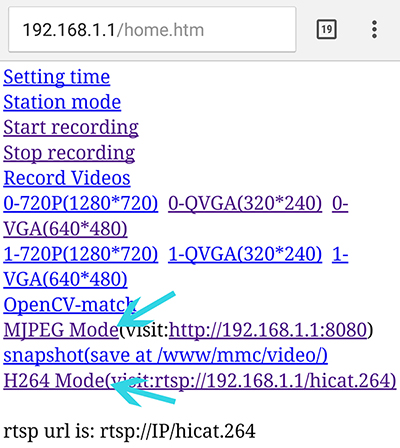
LIVERA has two video streaming mode RTSP/MJPEG, RTSP stands for advence H.264 codec raw video streaming which works well with our Android app or any video Players which accepted RTSP streaming protocol(suggest to use VLC player) with this IP:rtsp://192.168.1.1/hicat.264.
MJPEG would be a WEB friendly video format. Once you successfully boot up Livera and connected the WIFI, you can go to the web API page 192.168.1.1 to test the board's functions with your web browser, btw Chrome would be the best choice.
Go to web API page: 192.168.1.1, hit the link: MJPEG Mode, you could view the live video stream via the link: http://192.168.1.1:8080, suggest use chrome browser to visit, also you could change the video resolution by press the links, this resolution you choose would work for both RTSP and MJPG Mode.
If you using the webapp, the custom web app which stay in the sd card and would show up here:192.168.1.1/mmc/webapp/index.html. Choose the MJPG MODE from the webapp's top right switch button, and hit the LiveView button to get Live MJPG video stream from Livera.
Access into Linux(3518E): Livera accept telnet connections, when you connected to Livera through WIFI, you could open up your terminal, type:
telnet 192.168.1.1 //if you let the board connected to the router you should find the correct IP address
//User:root
//passward:(hit return directly)
cd /hicat/ //firmware directory
./launch.sh //Main script for main operation: video setting/mount sd card
cd /www/mmc //SD card directory
beside the internet ways, you could also go serial communication through the given UART port on Livera.
Reset Livera:
-
wifi reset: hold the reset buttom
RST-PBC, you would see the led lightSTATflashing per second, count for3 secondsps: very careful to not let it flash more than 10 seconds, once you see the led flash faster, the wifihicat_xxxxxxwould comes up in your wifi list. -
factory reset: make sure there is a folder named hicat_failsafe.tar, if so, hold the reset buttom
RST-PBC, you would see the led lightSTATflashing per second, count for10 seconds, once you see the led flash faster, you would get a brand new Livera.
SD Card:
Caution: if you have the SD card which comes with the Kits, the needed file has already been installed, the below instruction shows how to set up a new card.
mount sd card: any new sd card with format(vfat&fat32) would be auto mounted. if not, stick it into the sd card slot and follow the steps below.
- goto
- follow the above step
access into Linux(3518E)to telnet into Livera(simular like ssh) - goto the address
`cd /hicat/`
- within the
hicatdirectory you should find the command line tool namedlaunsh.sh - then go
./launch.sh sd
//you should see 4 options `format|mount|umount|hicatEx`, `format` means format the sd card into `fat32` file system which works like this command below:
./launch.sh sd format
mount&umount would let you mount the sd card to /www/mmc directory, hicatEx would helps you to depackage the hicatEx.tar (put it into sd card before you go hicatEx) which contains some important programs for Livera's system.
- do format first(format the sd card into fat32 in your pc/mac would be okay), then go mount, finally hicatEx.
- once you finished format and mount the sd card there will be you could chose to put the OpenCV lib into opencv folder incase for opencv demo.
Android APP:
APP main page:
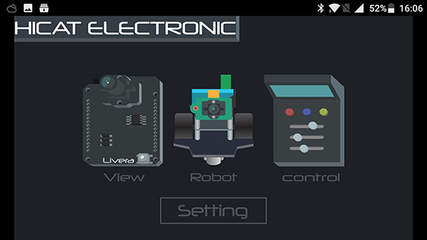
We've provided a custom android app for Livera, you could download it on our github page: https://github.com/hicat-tech/livera-android, the APP could help you liveview video, control robots, and access to livera's web app.
Do not forget the turn the livera into RTSP(H264) Mode before live viewing the video or access into robot control.
Web app:
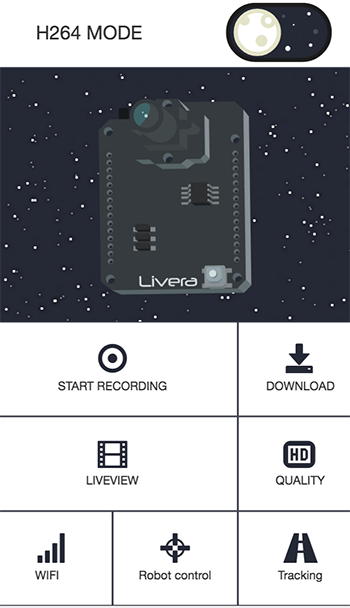
The web app provides functions like Video recording, Live streaming, Livera setting,
What an amazing feature about livera is that it could serve web pages as web app thanks to the file streaming server, in Livera's demo, we've provided a single page web app which based on VUE.js, the app would work as Livera's command panel.
To use the web app you could go download the web app here:https://github.com/hicat-tech/webapp
The web server within Livera also provide REST API which allows you to communicate with Livera through AJAX, have a look at detailed description within API GUIDE.
Hardware
Livera
Livera's given I/O port has connected into MCU(Atmel 32u4), and the pin layout is pretty much likely to Arduino Mini, you could program it with arduino IDE through the given USB port, select the board to arduino leonardo.
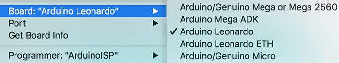
We've also placed a mpu6050 6-axie accelerometer on Livera, this would help in case of self-balance vehicle, there is 3 I/O port been connected MCU(32u4), there are I2C(D2:SDA,D3:SCL) and interrupt(D7)
Livera Hardware Architecture: 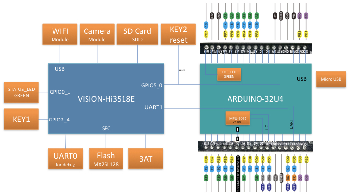 Arduino(MCU) I/O Pin Indicate: 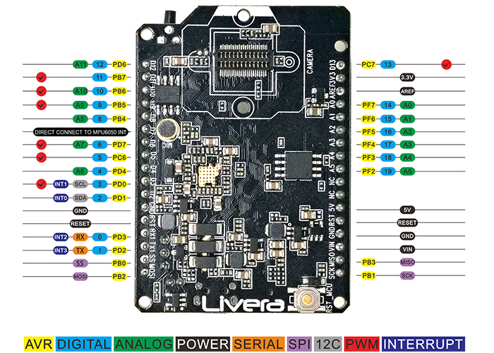
Motor Driver
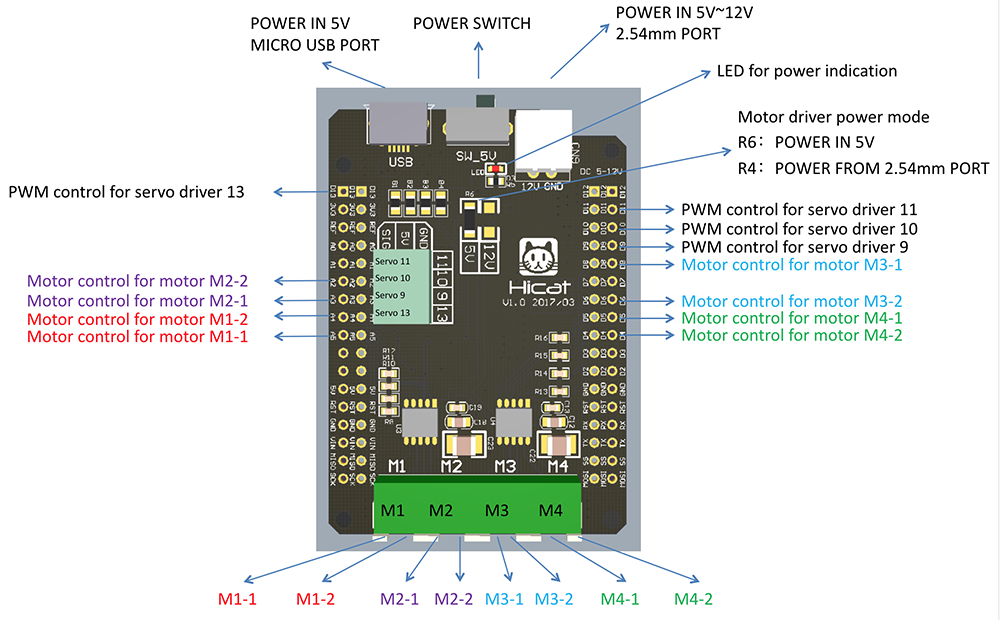
Port Indicator: Motor Driver -> Hicat.Livera
- Motor Port 1(M1):
M1-1 -> A5,M1-2 -> A4. - Motor Port 2(M2):
M2-1 -> A3,M2-2 -> A2. - Motor Port 3(M3):
M3-1 -> D8,M3-2 -> D6. -
Motor Port 4(M4):
M4-1 -> D5,M4-2 -> D4. -
Servo Motor Port:
11 -> D11, 10 -> D10, 9 -> D9, 13 -> D13
The Livera Motor Driver was designed specially for Livera, so that you can directly plug onto Livera, in this way you would get almost everything you need for a robotic system.
Livera Motor Driver can power up 4 DC motors and 3 Servo Motors, with external power input.
The Robot kit Assembly Guide
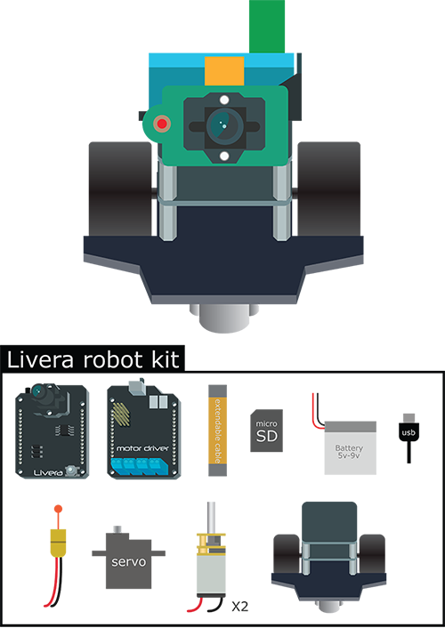
Like the picture shows, the Livera Robot kit ccomes with several conponents that you need you assemble and make it to a fully functional robot. This toturial would get you through all the process of physical building and wiring, it might take around 25 minutes to make the robot alive. Clear up your desk, unpack the Robot kit and let begin the journey.
Video Tutorial
We've also created a video toturial to give you a more detailed, much clear step by step toturial, would help you with:
- Pyhsical Assembly
- Webapp Guide
Step 1: Base panel build
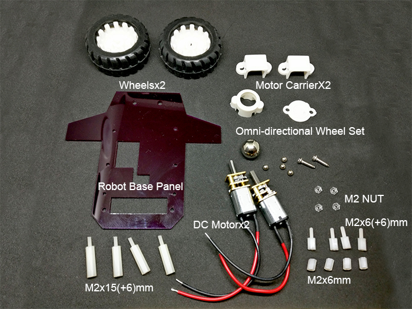
Unpack the Livera Robot kit package, Find out the following conponents in order to build the base panel of the Robot.
- Robot Base Acrylic Panel x1
- DC Motor + Motor Carrier x2
- Omni-directional Wheel Set x1
- M2x15(+6)mm Nylon Stud x4
- M2x6mm Nylon Stud x4
- M2x6(+6)mm Nylon Stud x4
- M2 Nylon Nut x4
Notice: All the Stud could be install by hand, doesn't require and tools.
Caution: Don't make it too tight while screwing with the Livera and Livera Motor Driver, might have a small chance to cause damage to the board if you screw it too hard.
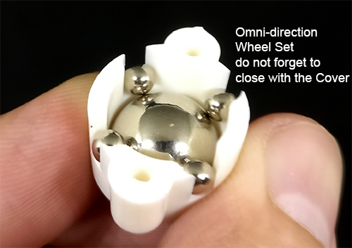
Assemble up the Omni-direction Wheel Set like the picture shows, then close up with the Cover bit, waiting for screw on the Base Panel.
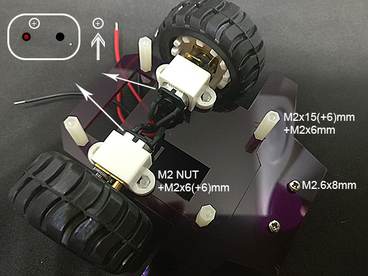
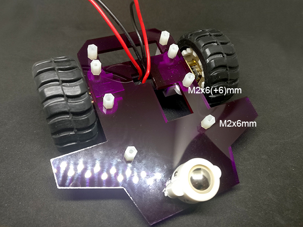
- Install the motor on base panel: carefully place the
M2 Nutonto theMotor Carrier's slot, than catch theDC Motorand match to the hole on theBase Panle, notice to keep the+sign on top as the left top of the pic shows, usingM2x6(+6) Studto screw through from the other side of the panel. - Install the Structure bit: place the
M2x15(+6) Studon top of theBase panel, then let the6mm screw bitthrough the hole and screw into theM2x6mm Stud.
Step 2: Body build
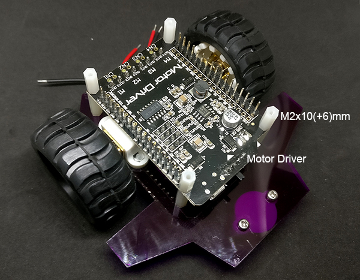
- Install the Livera Motor Driver: simply place by matching to the
Stud. - Install the Structure bit: Screw
M2x10(+6)mm Studon top.
Caution: Don't make it too tight while screwing with the Livera and Livera Motor Driver, might have a small chance to cause damage to the board if you screw it too hard.
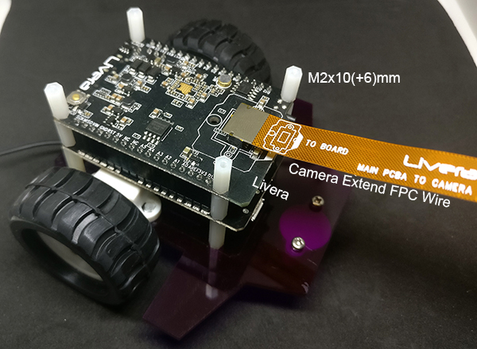
- Install HICAT.Livera with Extend Cable: carefully stack
Liveraon top ofLivera Motor Driver,do check for theI/O portsand theoutlineto see weather it is matched to theLivera Motor Driver. - Install the Structure bit: Screw
M2x10(+6)mm Studon top of Livera.
Caution: Don't make it too tight while screwing with the Livera and Livera Motor Driver, might have a small chance to cause damage to the board if you screw it too hard.
Step 3: Top build
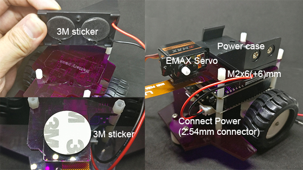
- Install the top Acrylic Panel: place the
Top Acrylic Panel, fix the panle by screw theM2x6(+6)mm Studon top. - Stick the Power case and Servo: unpack the
3M Sticker,stick the conponents as the image shows. - Connect Power: connect the 2.54mm Power connector from
Power casetoLivera Motor Driver.
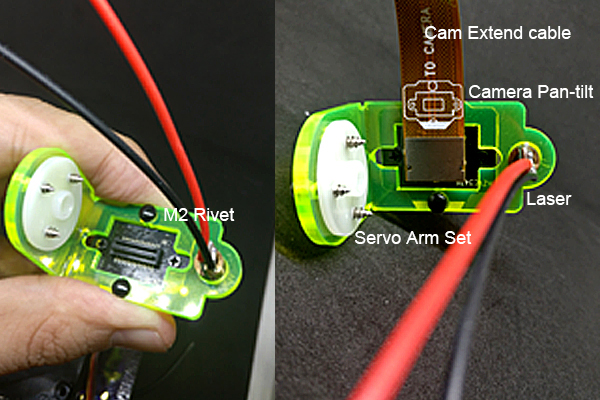
- Install the Camera pan-tilt: screw the Servo Arm Set form the
EMAX Servo seton theCamera Pan-tilt. - Install Camera Module: carefully place the camera module on the
Acrylic Camera Pan-tilt, usingM2 Rivetto fix it. - Install Camera Extend Cable and Laser Bean: install the conponents as the picture shows, notice that the
directionof the camera module should bematch togetheraccording to theindicate drawings.
Step 4: Wiring
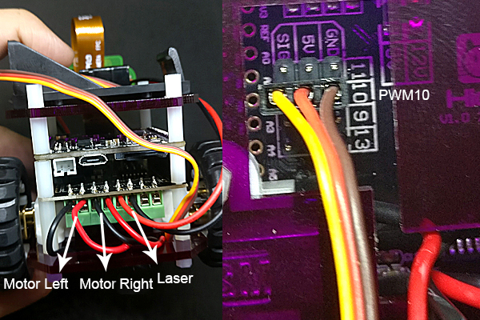
- Wiring: wire up all the electronics(Motors, Laser, Servo) as the picture shows, for the
DC Motorwring, you would need to use the screwdriver to fix the wire into the adapter. - Install SD card: put the
SD cardinto the SD slot.
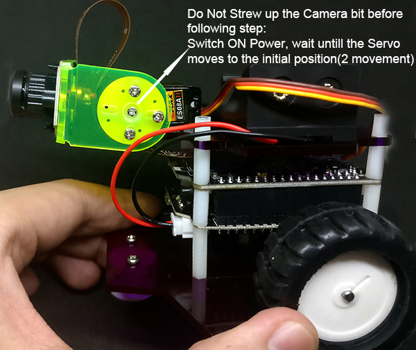
- Install Battery: put the
9v chargable batteryinto thePower Case. - Power up to init the Servo: switch on the
Power SwitchFrom the Motor Driver, wait until heardtwo movementfrom theServo,then put theCamera Pan-tilton theServoin ahorizon direction,screw it up using the smallest screw from the Servo Box. - Enjoy: pick up you cell phone, connect to the
Livera's wifi,
ssid:hicat_xxxxxx
passward:88888888
then open chrome browser, go to the web page
http://192.168.1.1/mmc/webapp/index.html
-
Switch the top video switcher to
MJPG MODE, clickLiveView, if the image flipped, you could change it withinQUALITY,we suggest you to chose240p/15fps. -
Click
ROBOTto open the control panel, Try press forward button, if you see the robotspinningormove back,you could adjust the wiring by switch theDC motorwire from the adapter.
Software
Firmware
Livera frimware is basically embedded Linux shell script with some executable program, which works immediately while Livera power on, keeping all the functions like MJPG/H264 Server, Bridge System, Rest API works.
Android
We've provided a custom android app for Livera, you could download it on our github page: https://github.com/hicat-tech/livera-android, the APP could help you liveview video, control robots, and access to livera's web app.
Do not forget the turn the livera into RTSP(H264) Mode before open the liveview and robot function.
APP main page:
Robot control panel:
Web app
The web app provides functions like Video recording, Live streaming, video download, wifi setting, visual tracking.
RTSP/MJPG MODE SWITCH:Once you open up the web app in your browser, the First thing to do is to select a video mode from RTSP to MJPG, after the selection you would immediately see some of UI changed according to different mode.
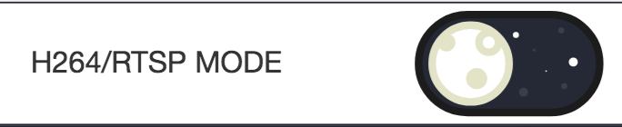
What an amazing feature about livera is it could serve web pages as web app thanks to the file streaming server, in Livera's demo, we've provided a single page web app which based on VUE.js, the app would work as Livera's command panel.
To use the web app you could go download the web app here
The server also provide REST API which allows you to communicate with Livera through AJAX
Example Code
Image Capturing
1. Image capture with Arduino Way
#include "hicat.h"
void setup()
{
hicat.begin();
char name[16] = "0.jpg";
for (int i = 0; i < 8; i++)
{
name[0] = '0' + i;
hicat.snapshot(name);
delay(10);
}
}
void loop()
{
}
2. Image capture with WEB Way
Livera's build in web server accept rest API, for detail description you could check out the WEB API guide.
One thing you have to Notice is that Livera has two image streming mode, which are MJPG for web and H264 for more advance video streaming.
- For Video Capturing:
//type the url directly within browser
//IP address could be different if you use station mode.
//first step, make sure you are in H264(RTSP) Mode
192.168.1.1/hicat/videoServer?mode=0
//Second step, start capture
192.168.1.1/hicat/record?save=1
//finally, stop
192.168.1.1/hicat/record?save=0
//AJAX is also avaliable, here is example with client side javascript
var xhr = new XMLHttpRequest(){
xhr.open('GET', '/hicat/videoServer?mode=0', true)
xhr.onload = function() {
answer = JSON.parse(xhr.responseText)
console.log(answer1)
}
xhr.send()
- For Image Capturing:
//type the url directly within browser
//IP address could be different if you use station mode.
//first step, make sure you are in MJPG Mode
192.168.1.1/hicat/videoServer?mode=1
//Second step, start capture image
//you could set up the image name xxx.jpg and stored direction '/www/mmc' is the SD card's directory
192.168.1.1/hicat/snapshot?name=xxx.jpg&dir=/www/mmc/video/
//AJAX is also avaliable, here is example with client side javascript
var xhr = new XMLHttpRequest(){
xhr.open('GET', '/hicat/videoServer?mode=1', true)
xhr.onload = function() {
answer = JSON.parse(xhr.responseText)
console.log(answer1)
}
xhr.send()
3. Image capture with Linux(c/c++) Way
We've cross compile a tool call curl which will help you to control Livera with the web api
//telnet/serial/arduino into Livera's terminal
//type the command below to invoke the web api. for detailed info please check out the web api section within the API GUIDE
curl http://127.0.0.1/hicat/record?save=1 //trigger h.264 video capture
Robot Kit
Websocket and bridge system: bridge is a websocket server that runs on the linux core, help to accept websocket connections to Livera onport 7681 and transfer the information to MCU(32u4).
Websocket Example:we've built a websocket bridge server to help to transport text message from front-end web client to Arduino.
//server on port 7681
var WebSocketURL = 'ws://' + window.location.hostname + ':7681'
ws = new WebSocket(WebSocketURL);
ws.onopen = function(event) {
console.log('ws connection opened:' + WebSocketURL);
}
ws.send(`msg`);
ws.close();
// hicat robot demo
// get SerialCommand library from https://github.com/hicat-tech/Arduino-SerialCommand
#include
#include
int PWM1 = 10; //control servo
int PWM_CE = 11; //servo enable
int AIN1 = 4; //control motor
int AIN2 = 5; //control motor
int AIN3 = 6; //control motor
int AIN4 = 8; //control motor
int BIN3 = A2; //control laser
int BIN4 = A3; //control laser
Servo myservo;
SerialCommand sCmd;
uint8_t camera_angle = 120;
uint8_t camera_angle_range[] = {
60, 150
};
uint8_t laser_is_on = 0;
void setup() {
Serial.begin(115200);
Serial1.begin(115200);
// initialize the digital pin as an output.
pinMode(AIN1, OUTPUT);
pinMode(AIN2, OUTPUT);
pinMode(AIN3, OUTPUT);
pinMode(AIN4, OUTPUT);
pinMode(BIN3, OUTPUT);
pinMode(BIN4, OUTPUT);
digitalWrite(BIN3, LOW); // turn off LASER
digitalWrite(BIN4, LOW);
pinMode(PWM_CE, OUTPUT);
myservo.attach(PWM1);
digitalWrite(PWM_CE, HIGH);
myservo.write(camera_angle);
digitalWrite(PWM_CE, LOW); //disable servo
// Setup callbacks for SerialCommand commands
sCmd.addCommand("laser", trigger_laser); // trigger laser
sCmd.addCommand("camera", adjust_camera); //
sCmd.addCommand("motor", set_motor);
sCmd.setDefaultHandler(unrecognized); // Handler for command that isn't matched (says "What?")
}
// the loop routine runs over and over again forever:
void loop() {
sCmd.readSerial();
}
void trigger_laser()
{
if (laser_is_on) {
digitalWrite(BIN3, LOW); // turn off LASER
laser_is_on = 0;
Serial.println("laser off");
}
else {
digitalWrite(BIN3, HIGH); // turn on LASER
laser_is_on = 1;
Serial.println("laser on");
}
}
void adjust_camera()
{
char *param;
param = sCmd.next();
if (!strcmp(param, "down")) {
if (camera_angle < camera_angle_range[1]) {
camera_angle += 10;
digitalWrite(PWM_CE, HIGH);
myservo.write(camera_angle);
digitalWrite(PWM_CE, HIGH);
}
}
else if (!strcmp(param, "up")) {
if (camera_angle > camera_angle_range[0]) {
camera_angle -= 10;
digitalWrite(PWM_CE, HIGH);
myservo.write(camera_angle);
digitalWrite(PWM_CE, HIGH);
}
}
Serial.print("camera angle: ");
Serial.println(camera_angle);
}
void set_motor()
{
char *param;
int16_t left = 0;
int16_t right = 0;
param = sCmd.next();
if (param == NULL) {
return;
}
left = atoi(param);
param = sCmd.next();
if (param == NULL) {
return;
}
right = atoi(param);
Serial.print("motor ");
Serial.print(left);
Serial.print(" ");
Serial.println(right);
if (left > 30) {
analogWrite(AIN2, left);
digitalWrite(AIN1, LOW);
} else if (left < -30) {
analogWrite(AIN2, 255 + left);
digitalWrite(AIN1, HIGH);
}
else {
digitalWrite(AIN1, LOW);
digitalWrite(AIN2, LOW);
}
if (right > 30) {
analogWrite(AIN3, right);
digitalWrite(AIN4, LOW);
}
else if (right < -30) {
analogWrite(AIN3, 255 + right);
digitalWrite(AIN4, HIGH);
}
else {
digitalWrite(AIN3, LOW);
digitalWrite(AIN4, LOW);
}
}
// This gets set as the default handler, and gets called when no other command matches.
void unrecognized(const char *command) {
Serial.println("What?");
}
Advance
API GUIDE
1.WEB API
The Web API contains a set of REST API in order to interact with LIVERA in a convenient way through AJAX or URL.
AJAX Example:the below could be run in general font-end javascript client side.
var xhr = new XMLHttpRequest(){
xhr.open('GET', '/hicat/videoServer?mode=0', true)
xhr.onload = function() {
answer = JSON.parse(xhr.responseText)
console.log(answer1)
}
xhr.send()
}
Websocket and bridge system: bridge is a websocket server that runs on the linux core, help to accept websocket connections to Livera onport 7681 and transfer the information to MCU(32u4).
Websocket Example:we've built a websocket bridge server to help to transport text message from front-end web client to Arduino.
//server on port 7681
var WebSocketURL = 'ws://' + window.location.hostname + ':7681'
ws = new WebSocket(WebSocketURL);
ws.onopen = function(event) {
console.log('ws connection opened:' + WebSocketURL);
}
ws.send(`msg`);
ws.close();
1.Set up Video Streaming Mode: This API allows you to swith between RTSP and MJPEG streaming mode, be careful that Video Record API only works under RTSP Mode, and Screen Shot API only works under MJEPG Mode.
/hicat/videoServer?mode=0
mode=0: RTSP Server Start
mode=1: MJPEG Mode
2.Station Mode: Let Livera link to local wifi router
/hicat/stationMode?ssid=xxxxx&password=xxxxxxx
return messages:
success: none return
error:{"result":"ERROR"}
3.WIFI Access Point: Make Livera to AP mode
/hicat/apMode?ssid=xxxxx&password=xxxxxxx
return messages(object):
success: none return
error：{"result":"ERROR"}
4.Set Livera time: Synchronous time with Livera, the time also affect to the default video name.
/hicat/setTime?time=%d-%d-%d-%d-%d-%d
Example: /hicat/setTime?time=2018-09-09-01-01-01
success：{"result":"OK"}
error：{"result":"ERROR"}
5.Get Video Download Links: This API will return a JASON format({"result":"OK","files":["name":"xxxxx","name":"xxxxx"]}) message about all the file within video folder in SD Card. Once you get the fileName you could just go to this url http://192.168.1.1/mmc/video/xxxxx.264 to download it(might figure your IP address under station mode).
/hicat/files
success:{"result":"OK","files":["name":"xxxxx","name":"xxxxx"]}
error:{"result":"ERROR"}
6.Video Record: This API allows you to record and delete the video and auto save into the default video folder in SD card.
/hicat/record?save=1
/hicat/record?del=xxxxxxxx.h264
save=1: start recording
save=0: stop recording and save
del=xxxxxxxx.h264: delete file xxxxxxxx.h264
success：{"result":"OK"}
error：{"result":"ERROR"}
7.Video Setting: Switch video angle, video resolution and video fps.
/hicat/setCamera?resolve=1&rotate=0&fps=20
success：{"result":"OK"}
error：{"result":"ERROR"}
//only work under mjpg mode
8.Snapshot: snap shot form one of the frame form MJPEG stream. We suggest to make the direction to /www/mmc/video/ coz the photo info could be receive under /hicat/files API.
/hicat/snapshot?name=xxx.jpg&dir=/www/mmc/video/
success：{"result":"OK"}
9.For test: test api, do nothing but test.
/hicat/test
success：{"result":"OK"}
2.Embedded Linux API
Detail information could be view under our github libhicat, There are instructions guide you through development tools set up and workflow, please have a look.
#ifndef _LIBHISIV_H_
#define _LIBHISIV_H_
#ifdef __cplusplus
extern "C" {
#endif
int venc_exit(int n);
int venc_init(int resolve);//0:720P 1:QVGA(320*240) 2:VGA(640*480)
int venc_init_more(int resolve,int mode,int fps);//resolve: 0/1/2 1280*720/320*240/640*480 mode: 0/1 H264/MJPEG
int venc_requestIDR();//request IDR frame
int venc_getFrame(char* buffer,int *datalen,int *pts,int *type);
int venc_snap(char* buff,int xRes,int yRes);
int venc_getYUV(int mode,char*buff);//mode=0 Y mode=1 UV mode = 3 YUV420(SP)
int venc_rotate(int dir);
//for audio
extern int aenc_init(int mode);// 0/1 PT_LPCM/AAC/
extern int aenc_getFrame(char* buff);
extern int aenc_exit();
//jpeg to http
extern int libyuvdist_startYuvDistService(int port);
extern int libyuvdist_updateYuv(int iHandle,char* data,int len,int seq,unsigned long timeStamp);
extern int libyuvdist_stopYuvDistService(int iHandle);
extern int libyuvdist_setSettingCallback(int iHandle,int func);//int func(int resX,int resY,int fps)
#ifdef __cplusplus
}
#endif
#endif
3.Arduino Libray API
The Arduino library wraps the web api, using serial communication and curl to communicate and send command to the video core(HI3518E). There are also example codes could be find in github
#ifndef _HICAT_H_
#define _HICAT_H_
#include <Arduino.h>
class HiCat
{
public:
HiCat();
int begin(void);
/**
* Take a picture
*
* @param file_name picture name
* @return 0 - OK, otherwise - error code
*/
int snapshot(const char *file_name);
/**
* Start to record a video which is saved at /www/mmc/video/
*
* @return 0 - OK, otherwise - error code
*/
int record();
/**
* Stop to record a video
*
* @return 0 - OK, otherwise - error code
*/
int stop_recording();
/**
* Set camera format
*
* @param resolution 0 - 1280*720, 2 - 640*480, 1 - 320*240
* @param rotation 0 - no rotation, 1 - 180 degree rotation
* @param fps frame per secord from 1 to 25
* @return 0 - OK, otherwise - error code
*/
int set_camera(int resolution, int rotation, int fps);
/**
* Set Wi-Fi mode
*
* @param mode 0 - AP mode, 1 - Station mode
* @param ssid SSID
* @param password password
* @return 0 - OK, otherwise - error code
*/
int set_wifi(int mode, const char *ssid, const char *password);
/**
* Run a shell command
*
* @param command shell command
* @return 0 - OK, otherwise - error code
*/
int run(const char *command);
private:
void prepare_web_command();
int read_result();
};
extern HiCat hicat;
#endif // _HICAT_H_
HI3518EV100 SDK
Content within SDK:
- linux
- file system
- Hi3518E Documentation&Hardware design reference
- download address: download link verifycode:
kspcdecode password:lk87612umzvcb01qqsalv
How to burn the firmware to flash
you must have a hicat board with a uboot already burned.
then connect the UART0 on the ARM9 Hisiv chip. and then use the command as below[recomendly using Hyper Terminal to finish this]:
loady 0x82000000
then send file on Hyper Terminal with xmodern protocal. choose the uImage file under https://github.com/9crk/libhisiv/opt/
sf probe 0
sf erase 0x100000 0x300000
sf write 0x82000000 0x100000 0x300000
loady 0x82000000
then send the rootfs file to the board.
sf erase 0x400000 0xC00000
sf write 0x82000000 0x400000 0x500000
setenv bootargs 'mem=32M console=ttyAMA0,115200 root=/dev/mtdblock2 rootfstype=jffs2 mtdparts=hi_sfc:1M(boot),3M(kernel),12M(rootfs)'
setenv bootcmd 'sf probe 0;sf read 0x82000000 0x100000 0x300000;bootm 0x82000000'
saveenv
then reboot the board or execute 'reset' command.
About rtspserver and libhisiv.a
rtspserver have two demo: one is modified from live555 project. ( live555MediaServer ) source code is in https://bitbucket.org/zhouhua/hicat_rtspserver * play Address: rtsp://192.168.1.1/hicat.264
How to install software pack
- execute 'lrz' command to send libhicat/opt/hi_sd.sh into the board (any where)
- format the sd card with fat32 format in default param. or use mkfs.vfat on Linux OS
- then execute
chmod +x hi_sd.sh && ./hi_sd.sh, the board will reboot
How to upgrade 1. Formating the SD card with vfat or fat32 mode. 2. then copy the hicat2016xxxx.tar package to the SD card. 3. press the reset button (RST_PBC) 4. connect the power supply. 5. wait for the board reset again.
What's more zwebs https://9crk@bitbucket.org/zhouhua/hicat_zwebs.git
How to use programming with serial port on Hisiv libSerial https://github.com/9crk/libSerial.git
Linux SDK Source Code can be view here
openCV
How to use opencv Demo
- clone this repo
- then install the compiler
- compile the apps under 'app' dir with
./build.sh - copy the app dir to the board
- copy the opt/opencvlib dir to the board at /www/mmc/opencv/opencvlib
cd app && source env.shexecute './capture'to capture an image named 'myImage.jpg'execute './match model.jpg'to find the object model.jpg in the camera.- then you can browser the result hi.jpg on http://192.168.1.1/mmc/opencv/hi.jpg
The way To do black-line tracking.
1.check out the files.
~/libhicat/app$ ls__
build.sh capture.cpp hi.html match model2.jpg myImage.jpg capture env.sh hi.jpg match.cpp model.jpg
2.copy capture.cpp as a demo
cp capture.cpp lineTrack.cpp
3.modify build.sh, add content below
arm-hisiv100nptl-linux-g++ lineTrack.cpp ../lib/libhisiv.a -I../include -lpthread -lm -o lineTrack
4.compile
./build.sh
#include<stdio.h>
#include<stdlib.h>
#include<unistd.h>
#include"libhisiv.h"
int main(int argc,char* argv[])
{
char data[1280*720];
int len;
int i;
len = venc_getYUV(0,data);
int x,y;
int result[10];
for(i=0;i<10;i++){
result[i] = 0;
}
for(i=0;i<10;i++){
for(y=635;y<(635+10);y++){
for(x=i*72;x<(i+1)*72;x++){
result[i]+=data[y*1280+x];
}
}
result[i] = result[i]/(72*10);
}
for(i=0;i<10;i++){
result[i] = 0;
printf("result = %d\n",result[i]);
}
}